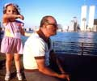
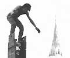
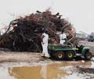
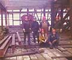

| |
 |
Press Releases | Images | Sounds | Banners
New York, NY - August 26, 2003
A CROSS-MEDIA COLLABORATION: Hundreds share stories and sounds of The World Trade Center and its neighborhood - before, on, and after September 11th - on public radio, in the Smithsonian, and online. ...
View
Press Release
View
Press Kit [.pdf]

For further information please contact:
Press and Web: Picture Projects, Alison Cornyn, acorn@picture-projects.com
tel: 212-226-3099 ext. 301
Radio: Davia Nelson, milocos@zoetrope.com
|
|
|
Press Releases | Images | Sounds | Banners
Image Resolution: 300dpi | Image Format:
EPS

Image Resolution: 300dpi | Image Format: TIF
Image Resolution: 300dpi | Image Format:
PCT // call 212-2263099x306 if you need EPS or if you have problems
downloading
Image Resolution: 300dpi | Image Format:
TIF
|
|
Add a Sound
© Picture Projects
The Sonic Memorial Project | SonicMemorial.org |
| Zip
File: 1.3MB |
 |
|
Photo by Charles H. Traub
From the collection of photographs 'Here is New York' Images from the Frontline of History: A Democracy of Photographs | www.hereisnewyork.org
The Sonic Memorial Project | SonicMemorial.org |
| Zip File: 5.2MB |
|
|
Note from Philippe Petit
Courtesy of Judy Broverman
The Sonic Memorial Project | SonicMemorial.org |
| Zip File: 1.0MB |
|
|
The Building Stewardesses in a Kiosk circa 69
Photo courtesy of Jane Selewach
The Sonic Memorial Project | SonicMemorial.org |
| Zip File: 9.5MB |
 |
|
Walking High Steel
Alex Mayo (Mohawk, Kahnawake) on a column at Second Avenue between Forty-seventh and Forty-eighth Streets, 1971
Courtesy of Kanien'kehaka Onkwawén:na Raotitiohkwa
The Sonic Memorial Project | SonicMemorial.org |
| Zip File: 3.1MB |
 |
|
Working at Fresh Kills Landfill
R: Tim Broome, L: Gary Tibbs
Photo by Elinoar Astrinsky for
The Sonic Memorial Project | SonicMemorial.org |
| Zip File: 6.3MB |
 |
|
Mohawk Ironworkers on the World Trade Center, early 1970s
Photo courtesy of Peter "Doc" Alfred
The Sonic Memorial Project | SonicMemorial.org |
| Zip File: 5.2MB |
|
|
Wedding Marathon Voucher
Courtesy of the Jahn family
The Sonic Memorial Project | SonicMemorial.org |
| Zip File: 5.2MB |
|
|
Bob and Barbara Krutzel at Windows on the World, 1976
Photo courtesy of Bob & Barbara Krutzel
The Sonic Memorial Project | SonicMemorial.org |
| Zip File: 7.4MB |
|
|
Original Ad from Radio Row Store
Courtesy of Hartman Center's Ad-Access, Digital Scriptorium of the Rare Book, Manuscript, and Special Collections Library, Duke University
The Sonic Memorial Project | SonicMemorial.org |
| Zip File: 1.0MB |
|
|
Radio Row, Cortland Street, NY, circa 1960
Courtesy of Antique Radio Classified
The Sonic Memorial Project | SonicMemorial.org |
| Zip File: 2.1MB |
|
|
Black and White Photo of World Trade Center Guides
(L to R) Jane Selewach, Sandy Austin, Kathleen Quinn, Barbara Cella
Photo courtesy of Jane Selewach.
Photographer D. Brewster, The Port of New York Authority 06/24/70
The Sonic Memorial Project | SonicMemorial.org |
| Zip File: 2.1MB |
|
|
|
Press
Releases | Images
| Sounds | Banners
Sample audio from Lost & Found Sound's Sonic
Memorial Project: audio traces from the World Trade Center, its neighborhood,
and the events of September 11.
Please contact Picture Projects
for sound samples.
|
|
|
Press Releases | Images | Sounds | Banners
| Include this copy along with The Sonic Memorial Project logo on your website: |
| | The Sonic Memorial Project is an extraordinary archive of audio traces of the World Trade Center, its neighborhood, and the events of September 11. NPR's Lost & Found Sound and the public broadcasting community have come together to establish this incredibly important and historic project. Contribute your audioartifacts and your story at SonicMemorial.org. |
All files remain the property of Lost & Found Sound and/or the original creators. Any reproduction without express permission is strictly prohibited. To request a sound for any use, please contact us at: info@picture-projects.com.
|